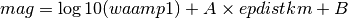

The MLh plugin (previously MLsed) is designed to compute amplitudes and magnitudes according to the Swiss Seismological Service (SED) standards.
The MLh amplitude calculation is very similar to the original ML. The two differences are:
Zero-to-peak is calculated by just dividing the peak-to-peak amplitude by two. This is not exact for unsymmetrical signals, but that doesn't matter because the code actually generates zero-to-peak amplitudes internally and multiplies them with two. So in the end we get real zero-to-peak values.
The MLh plugin calculates the individual station magnitude using the following formula:

waampl is the amplitude produced by the MLh plugin. Epidistkm is the distance from the sensor to the epicenter in kilometers. A and B are parameters that can be configured in a config file. Several pairs of A and B can be configured for different ranges of epicenter distance.
The SED standard is to use the median value of all contributing station magnitudes, no trimming.